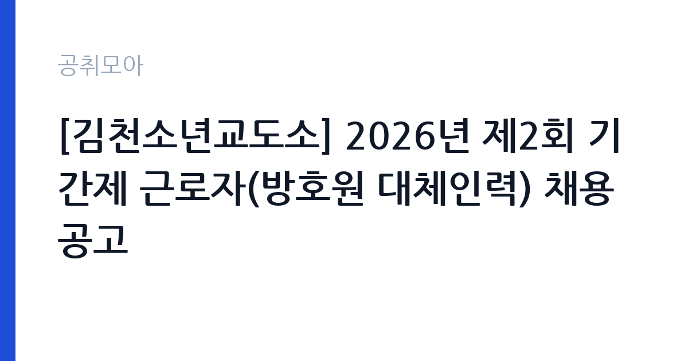

[국가기관] [김천소년교도소] 2026년 제2회 기간제 근로자(방호원 대체인력) 채용 공고
법무부 대구지방교정청 김천소년교도소 · 경북 · 마감 2026-11-12 (D-8) · 출처 나라일터

한눈에 보는 모집 조건
| 기관 | 법무부 대구지방교정청 김천소년교도소 |
|---|---|
| 공고명 | [김천소년교도소] 2026년 제2회 기간제 근로자(방호원 대체인력) 채용 공고 |
| 고용형태 | 기간제 |
| 근무지 | 경북 |
| 게시일 | 2026-11-04 |
| 마감일 | 2026-11-12 (D-8) |
지원자격, 이렇게 읽으세요
- 기간제근로자(방호원) 1명
- 접수 ~2026-11-12 마감
- 세부 조건은 원문 공고문 확인
기간제 근로자는 근로계약 기간이 정해진 신분입니다. 계약 기간과 갱신 가능 여부가 근로계약서에 명시되며 기간 만료 시 근로관계가 종료됩니다. 결원 보충이나 특정 사업 기간에 맞춰 채용되는 경우가 많아 업무 범위가 명확합니다. 이번 공고는 법무부 대구지방교정청 김천소년교도소가 직접 진행하는 자체 전형입니다. 대체인력 채용은 해당 직무의 기본 자격을 요구하는 경우가 많습니다. 사무 분야라면 워드프로세서나 컴퓨터활용능력 같은 자격증을 필수로 두는 공고가 있고, 자격 취득 시점을 공고 게시일 이전으로 제한하기도 합니다. 임용 예정일부터 근무가 가능해야 하며, 병역과 결격사유 확인 절차가 따릅니다. 계약 기간과 종료 시점을 반드시 확인하십시오. 응시 자격 판단이 애매하면 접수 전에 채용 담당 부서로 문의하는 편이 안전합니다. 응시 자격 판단이 애매하다면 접수 전에 채용 담당 부서로 문의하는 편이 안전합니다. 서류 제출 후에는 소명 기회가 없습니다. 공고문의 응시자격 표를 보면 자격 항목이 여러 줄로 나뉘어 있으므로, 각 줄을 하나씩 체크하며 본인 해당 여부를 표시해 두면 누락을 줄일 수 있습니다.
이 공고의 포인트
이 건은 법무부 대구지방교정청 김천소년교도소가 같은 시기에 낸 2개 모집분야 가운데 대체인력 직무입니다. 다른 직무 공고와 요건이 다르므로 지원 전에 모집분야 표를 대조해야 합니다. 이 공고의 첫 번째 포인트는 고용 형태입니다. 계약 기간이 정해져 있어 근무 종료 시점이 명확합니다. 그만큼 짧은 기간에 어떤 실적을 남길지가 중요해집니다. 두 번째는 업무 범위가 명확하다는 점입니다. 대체인력 직무로 채용되므로 배치 이후 담당 업무가 크게 흔들리지 않습니다. 세 번째는 근무지입니다. 경북 지역 근무로 수도권 공고에 비해 지원자 분포가 넓지 않아 상대적으로 경쟁이 분산되는 경우가 있습니다. 같은 기관의 다른 공고와 접수 기간이 겹치므로 중복 지원 가능 여부를 확인해야 합니다. 같은 직무로 함께 올라온 공고 가운데 접수 마감이 가장 늦은 편이라 준비 시간을 상대적으로 확보할 수 있습니다. 다만 선발 인원이 1명으로 많지 않아 자격을 갖춘 지원자가 몰리면 경쟁률이 높아질 수 있습니다.
전형은 어떻게 진행되나
전형은 서류심사와 면접심사를 기본으로 하고 직무에 따라 필기나 실기, 체력검정이 추가됩니다. 서류 단계에서는 응시자격 충족 여부와 제출서류 형식을 확인하며 이 단계에서 탈락하는 지원자가 적지 않습니다. 면접은 직무 이해도와 경험을 확인하는 방식으로 진행되고 발표는 개별 통보나 홈페이지 게시로 이뤄집니다. 최종합격 이후에는 결격사유 조회와 채용 신체검사가 이어지며 이 절차에서 문제가 확인되면 합격이 취소될 수 있습니다. 구체적인 전형 단계와 배점은 공고문에 표로 정리되어 있으니 원문을 기준으로 준비하십시오. 면접조 편성과 대기 시간이 공지되므로 당일 도착 시간을 여유 있게 잡으십시오.
원문에서 확인한 전형 방식
김천소년교도소에서 근무할 기간제 근로자(방호원 대체인력) 채용시험 계획을 붙임과 같이 공고하여 시행하오니 많은 응시 바랍니다. 2026. 11. 4. 김천소년교도소장 모집분야 : 기간제 근로자(방호원 대체인력) 접수기간 : 2026. 11. 9.(월) ~ 11. 12.(목) 응시방법 : 방문 및 등기우편 문 의 처 : 김천소년교도소 총무과(054-429-5527)
이런 분께 추천해요
- 공고에서 요구하는 사무 자격을 갖춘 분
- 짧은 인수인계 기간에 업무를 익힐 수 있는 분
- 계약 기간 동안 근무 공백을 만들지 않을 수 있는 분
지원 전 체크리스트
- 응시자격 요건과 경력 기준을 충족하는가 — 경력은 증명서로 입증해야 합니다
- 계약 기간과 근무 시작일·종료일을 확인했는가
- 제출서류 목록을 모두 준비했는가 — 누락 시 서류 단계에서 탈락합니다
- 접수 마감 2026-11-12 이전에 접수 방식을 확인해 제출했는가
모집 일정과 제출 타이밍
공고 게시일은 2026-11-04, 접수 마감은 2026-11-12입니다. 준비 기간은 약 8일로 서류 준비와 자격 증빙을 함께 처리하기에는 넉넉하지 않은 편입니다. 첫 이틀 안에 공고문과 첨부 서식을 내려받아 요건을 확인하고 남은 기간에 증빙 서류를 발급받는 일정이 현실적입니다. 면접은 서류 합격자 발표 후 짧은 간격으로 진행되는 경우가 많으므로 서류 제출과 동시에 면접 준비를 시작하는 편이 안전합니다. 마감일에는 접수 시스템이 몰리므로 하루 전까지 제출을 마치는 것이 좋습니다. 임용 예정일이 빠르게 잡히는 공고이므로 현재 일정과 겹치지 않는지 미리 확인하십시오.
직무 이해하기: 국가기관
법무·사법 기관은 재판과 송무, 수사, 교정 업무를 담당합니다. 법원행정처와 각급 법원은 재판 지원과 등기, 가족관계 업무를 운영하며, 법무부는 출입국과 보호, 교정 시설을 관리합니다. 보안과 비밀 유지 요건이 다른 기관보다 엄격합니다. 대체인력은 휴직자의 업무를 인수받아 공백 없이 사무를 처리하는 자리입니다. 인수인계 기간이 짧아 담당 업무의 절차와 서식을 빠르게 익혀야 하고, 문서 작성과 자료 정리, 예산 집행 보조, 민원 응대가 중심이 됩니다. 휴직자의 복귀 시점에 맞춰 계약이 종료되므로 근무 기간이 명확합니다. 인수인계 문서를 남기는 것도 중요한 업무이며, 부서 일정에 따라 초과근무가 발생할 수 있습니다. 이 직무는 담당 구역이 정해져 있어 근무지에 따라 실제 업무 환경이 달라집니다. 현장 업무와 사무 업무의 비중은 기관의 사업 일정에 따라 계절별로 달라집니다. 이 건의 근무 대상 지역·부서는 원문 기준 '방호원 대체인력'입니다.
자기소개서 작성 팁
지원서는 인수인계와 업무 연속성을 보여주는 데 집중하십시오. 이전 근무지에서 담당 업무를 문서화해 넘긴 경험, 짧은 기간에 새 업무를 익힌 사례가 소재가 됩니다. 사무 자격과 문서 작성 경험을 구체적으로 쓰고, 계약 기간 동안 공백을 만들지 않겠다는 태도를 밝히면 신뢰를 얻습니다. 직무 경험이 많지 않다면 경험의 양보다 과정을 구체적으로 쓰는 편이 낫습니다. 어떤 상황에서 무엇을 판단했고 어떤 결과가 나왔는지 순서대로 서술하면 신뢰가 생깁니다. 지원 동기와 기여 방안은 한 문단씩 짧게 유지하고, 가장 자신 있는 경험에 분량을 몰아주십시오. 마지막 문장은 포부보다 구체적인 실행 계획으로 끝내는 것이 좋습니다.
면접 준비 포인트
면접에서는 인수인계 속도와 업무 정확성을 확인합니다. 짧은 기간에 여러 업무를 익힌 경험, 인수인계 문서를 만든 경험을 구체적으로 답하십시오. 휴직자 복귀 후 계약이 끝나는 조건을 이해하고 있는지도 확인합니다. 사무 자격과 문서 작성 능력은 서류에서 드러나므로 실제 처리 방식과 우선순위 판단을 보여주는 것이 좋습니다. 마지막 질문 시간에는 근무 조건에 대한 확인 사항을 한 가지 정도 준비해 가면 성실성이 드러납니다. 본인 경험을 말할 때는 기간, 역할, 결과를 순서대로 정리해 두면 질문이 바뀌어도 활용할 수 있습니다.
급여·근무조건 읽는 법
기간제·비정규직 대체인력 보수는 기관 임금표에 따라 월급과 수당으로 지급되며, 계약 기간이 정해져 있어 총액은 월 급여와 근무 개월 수로 결정됩니다. 정규직과 달리 성과급이 적용되지 않는 경우가 많으므로 처우 항목을 항목별로 확인하십시오. 다만 법무부 대구지방교정청 김천소년교도소의 보수 수치는 이 글에서 확인된 공시 자료가 없어 추정해 제시하지 않았습니다. 공고문 처우 항목과 첨부된 보수표를 기준으로 확인하십시오. 알리오 2025년 결산 공시 기준 공공기관 전체 일반정규직 1인당 평균보수는 7,376만 9천원, 신입사원 평균초임은 4,031만 6천원입니다(무기계약직 미포함). 2026년 적용 최저임금은 시급 10,320원, 월 환산 2,156,880원(주 40시간·209시간 기준)입니다. 고용노동부 고시 제2025-47호로 확정된 금액입니다. 공고문에 금액이 제시되지 않은 항목은 원문 보수표나 처우 설명에서 확인해야 하며 확인되지 않은 수치는 쓰지 않는 것이 원칙입니다. 비교할 때는 월 급여뿐 아니라 상여·명절휴가비·복지포인트·초과근무수당까지 포함한 연간 총액으로 계산하십시오. 기간제라면 계약 기간 동안의 총액을, 무기계약이라면 호봉 상승과 정년까지의 누적 소득을 기준으로 판단하는 편이 정확합니다.
자주 묻는 질문
- 선발 인원은 몇 명인가요?
공고문 기준 1명입니다. 직종별로 인원이 나뉘는 경우가 있으니 모집분야 항목을 함께 확인하십시오. - 근무지는 어디인가요?
경북 지역의 법무부 대구지방교정청 김천소년교도소 소속 근무지입니다. 세부 주소와 출퇴근 조건은 원문 공고문에서 확인할 수 있습니다. - 보수는 얼마인가요?
채용 신분(기간제)과 기관 임금 규정에 따라 정해지며 구체적인 금액은 공고문 처우 항목에 제시됩니다. 금액이 공개되지 않은 경우에는 원문의 보수표를 확인하십시오.
함께 보면 좋은 공고
[국가기관] 2026년 제7회 광양우체국 상시계약집배원 채용 공고 — 마감 2026-11-12[국가기관] 제8회 서천우체국 기간제 상시계약집배원(농어촌) 채용 재공고 — 마감 2026-11-12[국가기관] 해병대 덕산대 체력단련장(경기 화성) 공무직근로자 (경기담당) 채용 공고 — 마감 2026-11-13출처: 나라일터 공개정보를 바탕으로 공취모아가 정리한 안내글입니다. 모집 조건·일정은 변경될 수 있으니 지원 전 반드시 원문 공고문을 확인하세요. 본 글은 정보 제공용이며 합격을 보장하지 않습니다.